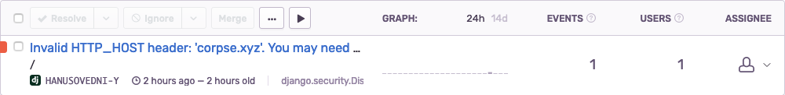

Who knocks on my servers?
Weird domains and IP addresses in Django‘s exceptions „Invalid HTTP_HOST header“
A few months back I worked on a website for a local city festival. It’s a popular festival with lots of guests from different countries and a quite long history.
I migrated the site from Wordpress to a brand new Wagtail solution. We have also moved from shared hosting to a VPS. I wanted to progress quickly with development. So I launched a new version of the website as soon as possible with just uWSGI responding to all the HTTP traffic. Soon after the launch, I started to get weird errors in Sentry:

Not truncated message from the error is:
Invalid HTTP_HOST header: 'corpse.xyz'. You may need to add 'corpse.xyz' to ALLOWED_HOSTS.
The message was clear. Requests were coming to my server from a domain that is not allowed. How it can be? “Maybe someone pointed his domain to my server’s IP address by mistake?” was first thought in my head. But there were many of those requests from many different domains. And they tried to access weird URLs like:
/wp-login.php /wp/wp-login.php /cgi-bin/test.sh /cgi-bin/hello.sh
And also some of them came not from domain names but IP addresses. That was even weirder.
You can’t trust Host header
After some time I found the reason behind this strange behavior. Domains and IP addresses I saw in Sentry or logs are from HTTP header called “Host”. And all HTTP headers are set by client. In other words, you can’t trust HTTP headers. Clients can set header to whatever value they like. For example, this is how you can do it in Python with library requests:
import requests requests.get("http://hanusovedni.sk", headers={"Host": "corpse.xyz"})
Those weird requests were coming not from humans but robots. There is a lot of robots that scan all IP addresses that exist on the Internet and are looking for vulnerabilities on websites. There are two groups of such robots:
- attackers who want to misuse vulnerabilities
- white-hat organizations like The Shadowserver Foundation finding and reporting vulnerabilities
Either way, you don't want your application to deal with them.
Solution
There is actually no real problem when you see this type of exception.
It means Django is doing it’s job and filters malicious requests.
But we want to filter out such requests as soon as possible.
In most cases it means to filter it at reverse proxy.
In my case it‘s Traefik.
You can create rules for Treafik as labels on your services in docker-compose.yml.
This rule will pass to Django only requests with Host header set to my domain.
traefik.http.routers.web-router.rule=Host(`hanusovedni.sk`, `www.hanusovedni.sk`)
Full definition of service from docker-compose.yml:
services: web: image: ${WEB_IMAGE} env_file: - secrets.env environment: DJANGO_SETTINGS_MODULE: "hanusovedni.settings.production" volumes: - /var/www/static:/static_root - /var/www/media:/media_root deploy: replicas: 2 restart_policy: condition: on-failure labels: - "traefik.enable=true" - "traefik.http.routers.web-router.rule=Host(`hanusovedni.sk`, `www.hanusovedni.sk`)" - "traefik.http.services.web.loadbalancer.server.port=8000"
What can an attacker do with the "Host" header anyway?
Let me introduce you to the world of HTTP Host header attacks. Your website can be in danger only if you (or any code that you run) use the "Host" header. The typical example is about sending an email with a link to reset the password. Let's assume you build the message this way:
def build_message_for_password_reset(request): token = "hash42" # usually there will be some kind of hash link = "http://" + request.META['HTTP_HOST'] + "/reset-password/" + token return f"Click on this link to reset your password: {link}"
If the attacker sends as the "Host" header his website "evil-web.com" the user will (potentially) click on this URL:
http://evil-web.com/reset-password/hash42
At this point, the attacker can catch the token and reset the user's password and show the user whatever he wants.
Now you understand why it's important to correctly set ALLOWED_HOSTS in Django's settings. ;)
Comments
Comments powered by Disqus